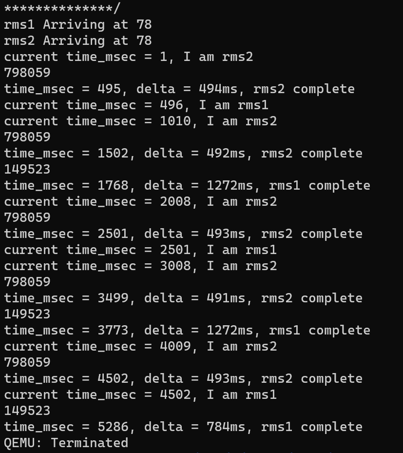
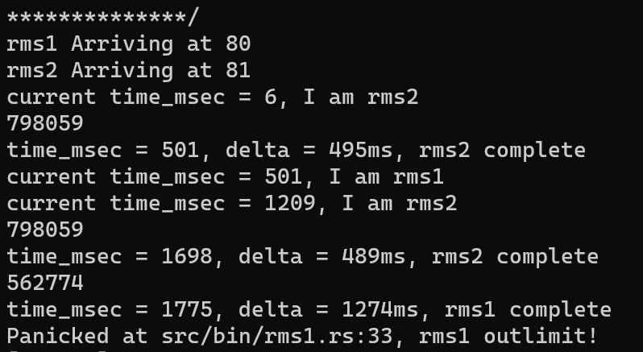
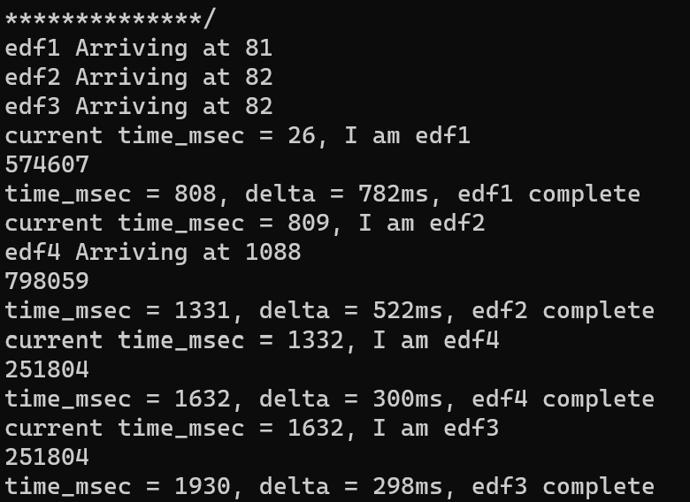
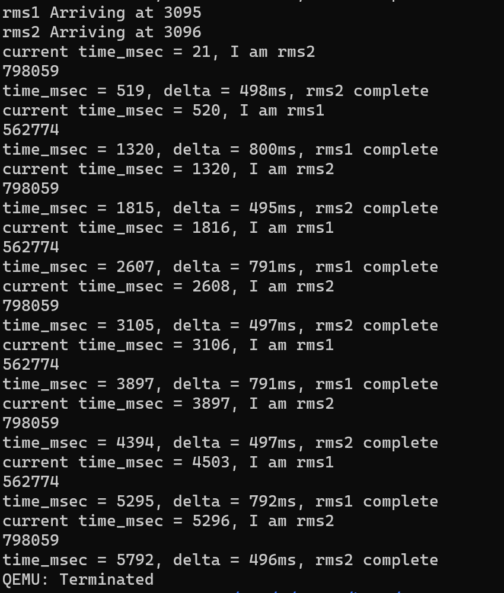

实时计算机系统的调度
实时计算机系统通常可以分为硬实时（Hard Real Time）和软实时（Soft Real Time）两类，硬实时是指任务完成时间必须在绝对的截止时间内，如果超过意味着错误和失败，可能导致严重后果。软实时是指任务完成时间尽量在绝对的截止时间内，偶尔超过可以接受。
实时的任务是由一组进程来实现，其中每个进程的行为是可预测和提前确定的。这些进程称为实时进程，它们的执行时间一般较短。支持实时任务的操作系统称为实时操作系统。实时计算机系统是一种以确定的时间范围起到主导作用的计算机系统，一旦外设发给计算机一个事件（如时钟中断、网络包到达等），计算机必须在一个确定时间范围内做出响应。
单调速率调度(RMS)
单调速率（RMS）调度算法采用抢占的、静态优先级的策略，调度周期性任务。
当较低优先级的进程正在运行并且较高优先级的进程可以运行时，较高优先级进程将会抢占低优先级。在进入系统时，每个周期性任务会分配一个优先级，它与其周期成反比，即周期越短，优先级越高；周期越长，优先级越低。
单调速率调度可认为是最优的，因为如果一组进程不能由此算法调度，它不能由任何其他分配静态优先级的算法来调度。我们接下来分析一组进程，它们不能使用单调速率算法来调度。
尽管是最优的，然而单调速率调度有一个限制，CPU 的利用率是有限的，并不总是可能完全最大化 CPU 资源。调度 N 个进程的最坏情况下的 CPU 利用率为 $$ N(2^{1/N} - 1) $$ 如果超过了这个值，RMS不能保证他们一定能被调度。
实现
类比SJF的实现，在exec时传入周期值，每当新进程出现或者进程被唤醒，比较周期值，小的优先执行。
测试
static TESTS: &[&str] = &[
"rms1\0",
"rms2\0",
];
// static TIMES: [usize;2] = [
// 800,
// 500,
// ];
static PERIODS: [usize; 2] = [
2000,
1000,
];
以上两个任务rms1，2分别有800/2000和500/1000的周期/时长。按照rms调度，2的优先级将高于1.观察运行结果：
在前500ms，2优先执行，之后1开始执行，但是到1000ms时2请求再次开始运行，因为2的优先级高，所以1被抢占，直到1500ms2运行结束。之后1恢复执行，到1800执行完成。此后到2000ms重复循环，可以实现这两个周期任务的正常运转。
稍微修改一下二者的周期
static PERIODS: [usize; 2] = [
1500,
1200,
];
从理论上来讲，800/1500+500/1200<1，按照某种调度可以运行，但是2(2^(1/2) - 1)<0.95,因此RMS可能无法正常调度。事实的确如此：
在500ms的rms2运行结束、rms1继续运行700ms时，rms2再次请求执行，优先被运行至1700ms，此时rms1才能接手，若运行完成已经到了1800ms了，远超了1500ms的周期，于是产生冲突，调度失败。
最早截止时间优先算法 (EDF)
最早截止期限优先（EDF）调度根据截止期限动态分配优先级。截止期限越早，优先级越高；截止期限越晚，优先级越低。
根据 EDF 策略，当一个进程可运行时，它应向系统公布截止期限要求。优先级可能需要进行调整，以便反映新可运行进程的截止期限。注意单调速率调度与 EDF 调度的不同，前者的优先级是固定的。而EDF 调度不要求进程应是周期的，也不要求进程的 CPU 执行的长度是固定的。唯一的要求是，进程在变成可运行时，应宣布它的截止期限。
实现
基本实现便是将RMS的period判断改为deadline判断即可，deadline则是根据exec传入的数值与当前时间加和得到。但是为了实现对周期性任务的支持，实现自动增加deadline功能，需要添加新的系统调用cycle，来代替sleep帮助进程实现周期执行。
pub fn sys_cycle(period: usize) -> isize {
let task = current_task().unwrap();
let mut task_inner = task.inner_exclusive_access();
let expire_ms = task_inner.task_deadline;
task_inner.task_deadline += period;
drop(task_inner);
add_timer(expire_ms, task);
block_current_and_run_next();
0
}
传入参数为进程周期，根据当前时间自动确定睡眠时间，并将deadline加上周期值。user的用法为在周期任务的一个周期最后加上cycle(period)即可。
测试
首先测试一下一般任务：
static TESTS: &[&str] = &[
"edf1\0",
"edf2\0",
"edf3\0",
"edf4\0",
"rms1\0",
"rms2\0",
];
// static TIMES: [usize;3] = [
// 800,
// 500,
// 300
// 300,
// 800,
// 500,
// ];
static DEADLINES: [usize; 6] = [
1000,
1500,
2000,
800,
1500,
1200,
];
前四个edf测例，其中123在一开始到达，4在1000ms后到达。对于123，优先执行ddl最早的1，直到800ms换成2开始执行。到1000ms，4到达，虽然其ddl输入是800，但是实际ddl要加上当前时间，为1800。于是4无法抢占2，2继续执行到1300结束。此时比较4和3，1800<2000，4开始执行，到1600ms时3最后执行。最终均满足ddl要求。
另一方面，检测一下EDF对于RMS无法调度的周期任务的表现。如上后两个rms1,2和RMS的BAD测试一致。测试结果：
完成了正常调度，与RMS的区别在于，初始时按照周期长短2优先于1执行，到500ms后1开始执行，虽然2在1200ms再次请求运行，但是此时1的ddl已经成为2*1200=2400>1500，1优先于2了，于是1的第一次运行继续进行，正常结束。此后则不断变换优先级，最终使得调度成功。